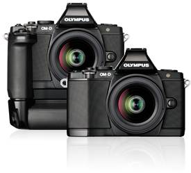
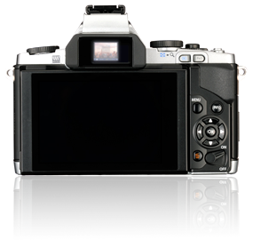
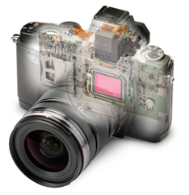
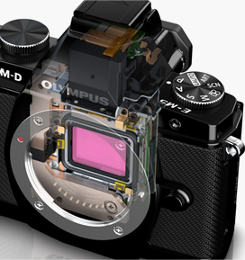
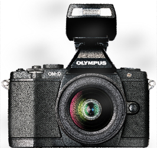
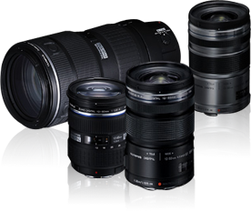

-
THE BEGINNING OF THE NEW
OM-D: CREATE YOUR OWN WORLD
A new digital SLR era is about to begin. Digital SLRs, which simply replaced film with an imaging device did not change significantly in terms of size, weight and user interface. The revolutionary, new mirrorless camera, the OM-D, has an exceptionally light and compact body.
 -
ELECTRONIC VIEWFINDER
The OM-D's new electronic viewfinder (EVF) features a high-resolution 1.44-million dot LCD, 100% field-of-view coverage, and 1.15x maximum magnification that let you totally immerse yourself in your subject, and actively control image creation.
 -
FAST AF
The world's fastest* autofocusing system, FAST AF, has been made even faster and more accurate on the OM-D. Improved new 3D Tracking AF assures you won't miss the moment even when subjects move toward or away from you.
 -
5-AXIS
IMAGES STABILIZATIONThe OM-D is equipped with the world's first 5-axis image stabilization system, and can compensate for vertical, horizontal, and rotational camera shake that conventional 2-axis systems of the past have been unable to handle.
 -
DUST-PROOF & SPLASH-
PROFFCONSTRUCTIONTrouble-free shooting in all environments is assured by our proven dust-proof and splash-proof technology.
 -
LENSES AND ACCESSORIES
In addition to its new electronic motorized M.ZUIKO DIGITAL ED 12-50mm F3.5-6.3 EZ lens with quiet, linear drive AF, the OM-D is supported by an ever-expanding range of wide-angle, macro, portrait, and telephoto Micro Four Thirds M.ZUIKO DIGITAL lenses. System accessories include cases, straps, filters, external flash units, and mount adapters for Four Thirds System lenses and OM System lenses.
